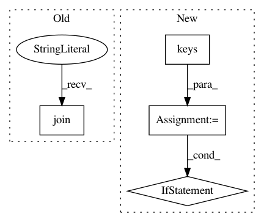

952e63ef222188ff04be084af2362a39df8b8e53,qcengine/programs/mopac.py,MopacHarness,build_input,#MopacHarness#Any#Any#Any#,108
Before Change
env = os.environ.copy()
env["MKL_NUM_THREADS"] = str(config.ncores)
env["OMP_NUM_THREADS"] = str(config.ncores)
print("\n".join(input_file))
return {
"command": ["mopac", "dispatch.mop"],
After Change
else:
pulay = " "
unknown_keywords = keywords.keys() - {"ITER", "PULAY"}
if unknown_keywords:
raise InputError(f"Unknown keywords given to MOPAC: {unknown_keywords}")
// 1SCF says not to compute a geometry optimization, always compute a gradient (free), and dump the aux file
input_file.append(f"{method.upper()} "
f"CHARGE={input_model.molecule.molecular_charge} "
f"MS={(input_model.molecule.molecular_multiplicity-1)/2}&")
input_file.append(f"1SCF GRADIENTS AUX(PRECISION=9, XP, XS, XW) A0{pulay} ITER={keywords["ITER"]}&")
In pattern: SUPERPATTERN
Frequency: 3
Non-data size: 4
Instances
Project Name: MolSSI/QCEngine
Commit Name: 952e63ef222188ff04be084af2362a39df8b8e53
Time: 2019-09-30
Author: malorian@me.com
File Name: qcengine/programs/mopac.py
Class Name: MopacHarness
Method Name: build_input
Project Name: pantsbuild/pants
Commit Name: 101e42560d7fea7c128df33fcb161075288ead2f
Time: 2020-09-28
Author: benjyw@gmail.com
File Name: src/python/pants/help/help_printer.py
Class Name: HelpPrinter
Method Name: print_help
Project Name: keras-team/keras
Commit Name: e74a37438b5389ae19eb61b431859f9789100874
Time: 2017-05-22
Author: ajoseph.lobo@gmail.com
File Name: keras/backend/tensorflow_backend.py
Class Name:
Method Name: function